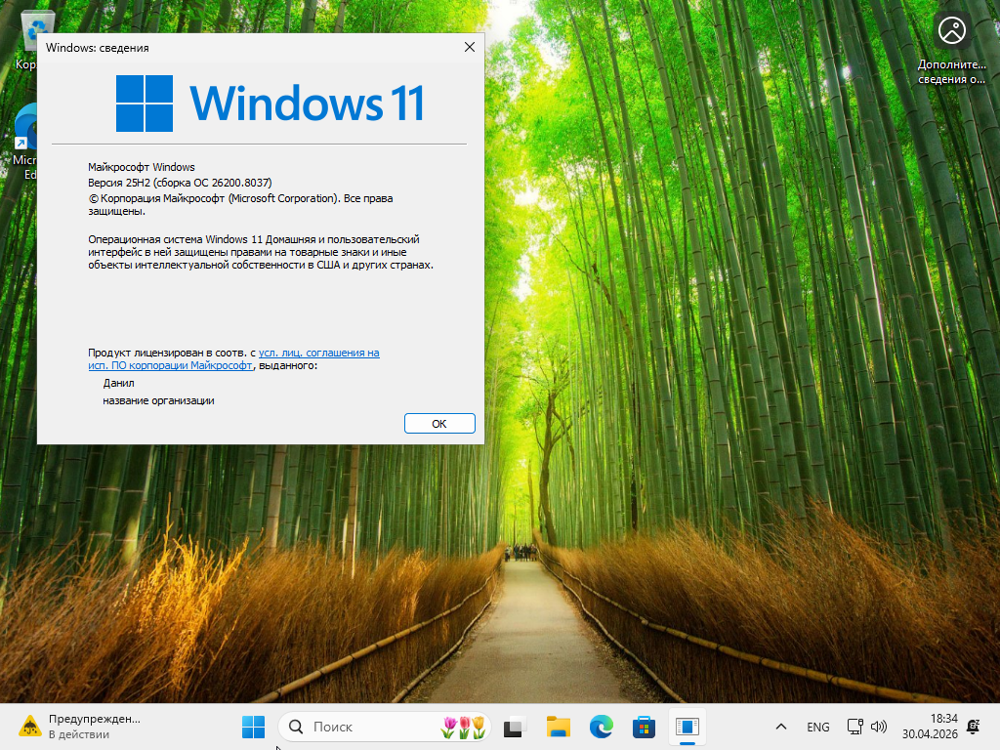
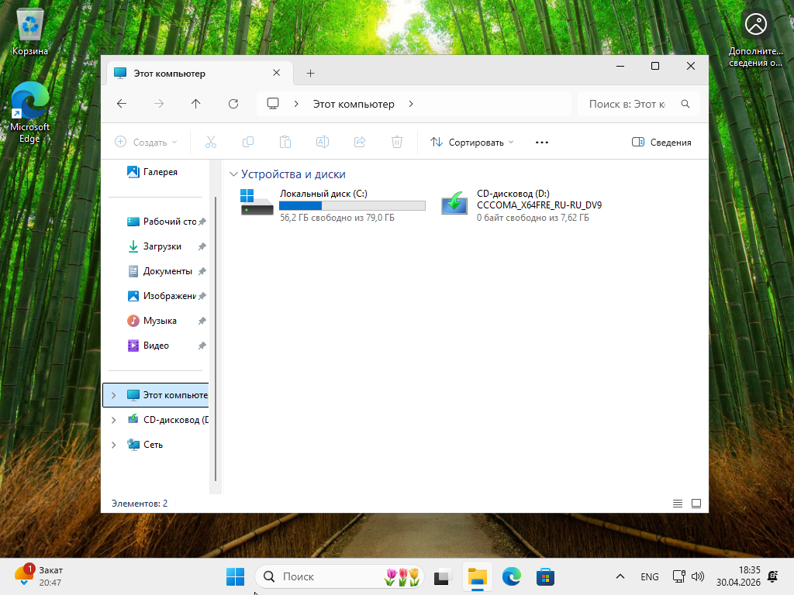
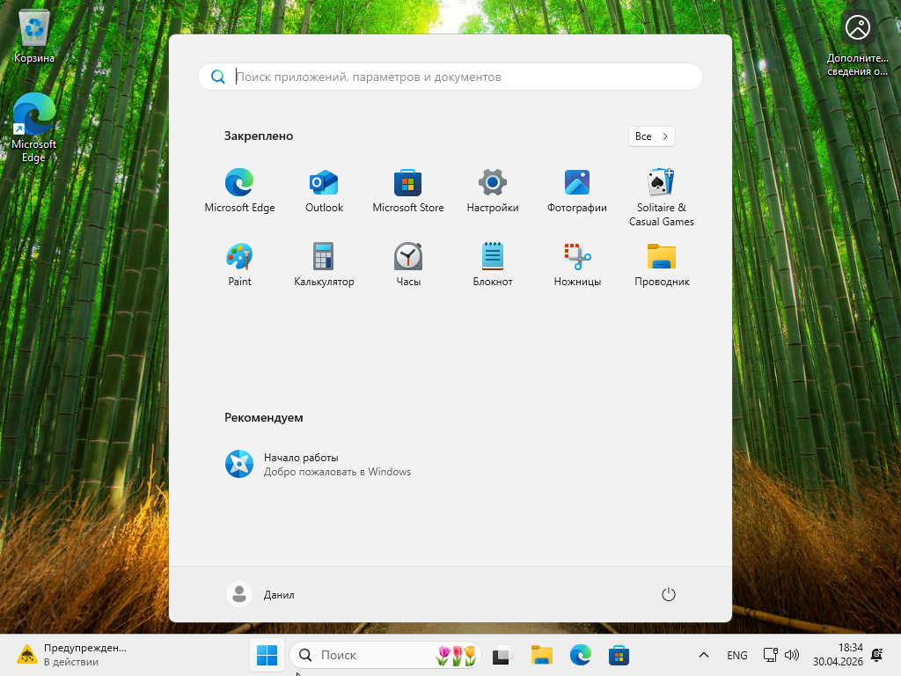
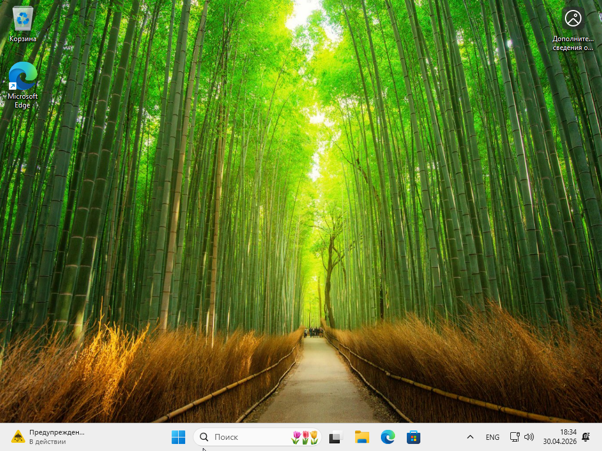

Главная
Изменения
О проекте
Проводник
💡 Совет: После скачивания проверьте контрольные суммы. Нажмите «Копировать» рядом с хешем.
Windows 11 Russian
Имя файла
Размер
Дата
SHA256
windows 11 x64/
7.62 ГБ
24.03.2026
F8097480...
MediaCreationTool.exe
18,5 МБ
22.04.2026
E887DFFF...
Windows 11 (x64) — Multi-edition ISO
(Сборка ОС 26200.8037)
📄 File: Win11_25H2_Russian_x64_v2.iso
🔐 SHA256: F809748051460F28C53360A6864FB4C8E5C4D2E11B1C5DA0C7702DD4080796D7
Копировать
💾 Size: 7,62 ГБ
🏷️ TAG: Версия: Windows 11 x64 25H2 (Сборка ОС 26200.8037), русский оригинал
Редакции в образе: Windows 11 Home, Windows 11 Pro, Windows 11 Home Single Language, Windows 11 Pro for Workstations
Скачать ISO
MediaCreationTool.exe
📄 File: MediaCreationTool.exe
🔐 SHA256: E887DFFF70BAF09A8C1DEBFE8C304DD9F2D9652FAE8B7C83B3C24554A79BBD7F
Копировать
💾 Size: 20,5 МБ
🏷️ TAG: Media Creation Tool
Скачать
Как проверить хеш-сумму ISO
Скриншоты

winver

Проводнк

Меню Пуск

Рабочий стол
×
❮
❯
 MediaCreationTool.exe
MediaCreationTool.exe